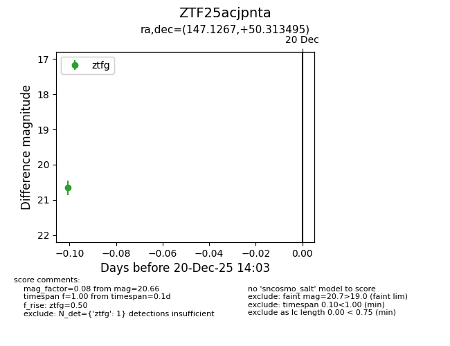
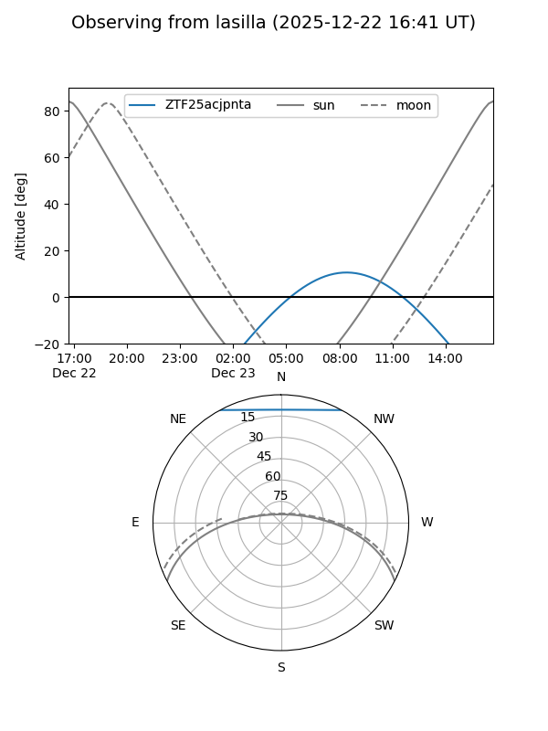
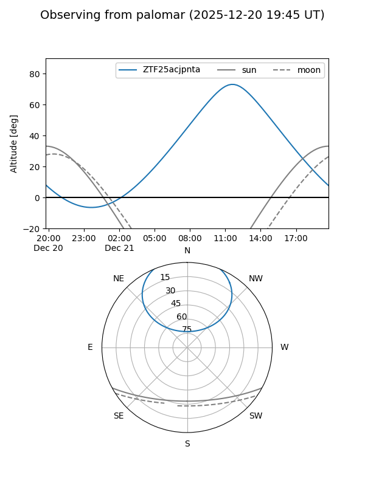

ZTF25acjpnta
Target ZTF25acjpnta at 2025-12-20 14:04
Aliases and brokers:
FINK: fink-portal.org/ZTF25acjpnta
Lasair: lasair-ztf.lsst.ac.uk/objects/ZTF25acjpnta
ALeRCE: alerce.online/object/ZTF25acjpnta
alt names
ZTF25acjpnta (ztf,fink_ztf)
Coordinates:
equatorial (ra, dec) = 147.1267,+50.31350
equatorial (HMS+DMS) = 09:48:30.41,+50:18:48.58
galactic (l, b) = (166.4461,+48.38319)
Flags:
Photometry:
last ztfg=20.66
1 ztfg detections
Lightcurve

Visibility


Additional plots